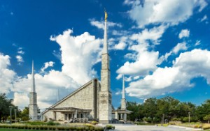
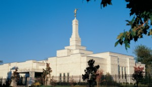
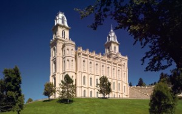
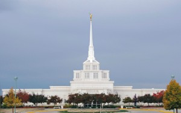

Dallas Texas Temple

Address:
6363 Willow Ln
Dallas TX, 75230-2227
United States
Phone Number: 972-991-1273
Services:
- Clothing rental available
- Cafeteria available
- No patron housing available
- Distribution center nearby
*Endowment Sessions are every half hour starting at 6:30 in the morning.*
History:
Dallas is the 30th operating temple and is the sister building to the
Boise Idaho Temple and the Chicago Illinois Temple. Ordinance work in the
Dallas Texas Temple has been performed for historical figures of special
significance to the citizens of Texas. For example, work was completed in
1986 for those involved in the tragedy at the Alamo on March 6, 1836.
In addition, work for 1,500 "Trail of Tears" Choctaw Indians was performed in the temple.

Address:
1100 Gray Fox Ln
Franklin TN 37069
United States
Phone Number: 615-791-8668
Services:
- No Clothing rental available
- No Cafeteria available
- No patron housing available
- No Distribution center nearby
*Endowment Sessions change every day so please call or look online for the updated schedule.*
History:
Nashville is the 84th operating temple. When the First Presidency announced plans for the Nashville
Tennessee Temple, there were only four operating temples east of the Mississippi River. A
week-long open house was held for the Nashville Tennessee Temple, which was toured by over
24,300 visitors, an average of more than 3,000 a day. Temple matron Diane McClurg noted,
"I heard people say as they went out that they felt different when they were inside.
That's a lot of what it's all about—the feeling of the Spirit."
Manti Utah Temple

Address:
200 E. 510 N.
Manti UT. 84642
United States
Phone Number: 435-835-2291
Services:
- Clothing rental available
- Cafeteria available
- No patron housing available
- Distribution center nearby
*Endowment Sessions are every hour starting at 7:30 in the morning.*
History:
Manti is the 3rd operating temple with plans of renovation in the
near future. It sits atop "Temple Hill" in Central Utah. The Manti
Utah Temple features beautiful hand-painted murals on the walls of
its progressive-style ordinance rooms: Creation Room, Garden Room,
World Room, Terrestrial Room (no murals), and Celestial Room (no murals).
Lightning struck the east tower of the Manti Utah Temple in 1928, which
started a fire that burned for three hours before it could be extinguished.
Billings Montana Temple

Address:
3100 Rim Point Dr.
Billings MT 59106
United States
Phone Number: 406-655-0607
Services:
- Clothing rental available
- No Cafeteria available
- No patron housing available
- Distribution center nearby
*Endowment Sessions are every hour starting at 6:00 in the morning.*
History:
Billings is the 66th operating temple built in the biggest city in Montana.
On the exterior, the temple is unique in many ways. The spire, topped by
a statue of Angel Moroni, rises from a tiered tower faced with louvered vents
that appear to be shuttered windows. The west end of the single story building
is accentuated by a stained-glass bay window. The temple grounds are landscaped
with lawns, flower gardens and more than 250 trees and 4,500 shrubs. Retaining walls
and fence foundations are built of manufactured stones painted to match the prominent,
300-foot-high Rimrock cliffs that border the rear side of the temple property.